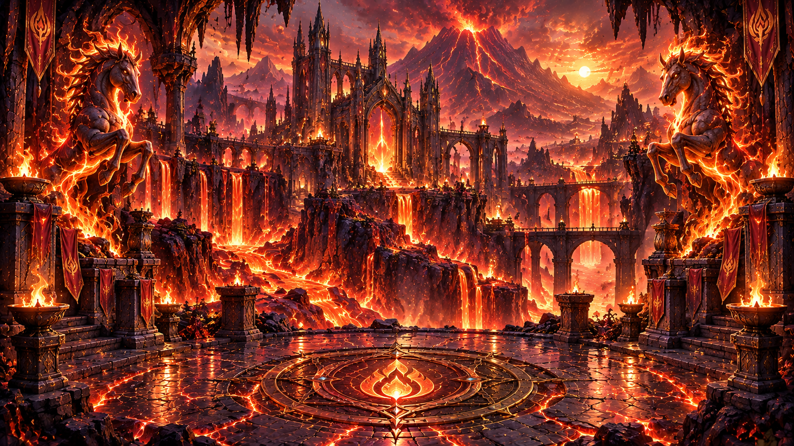
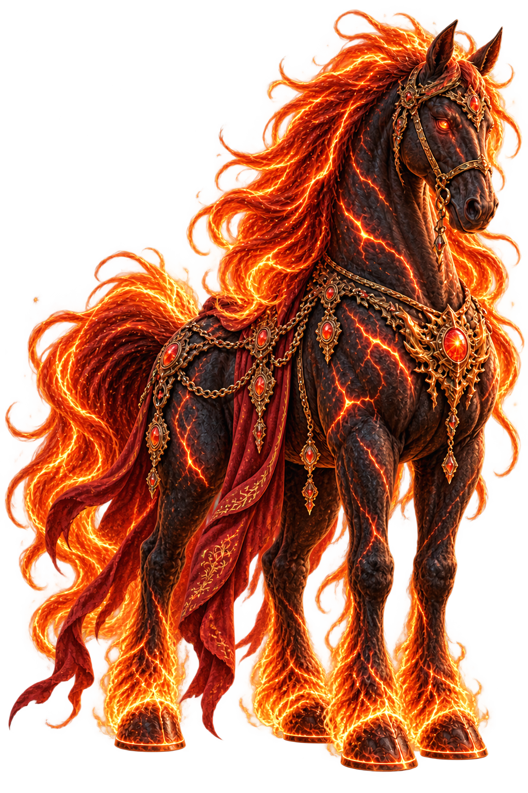
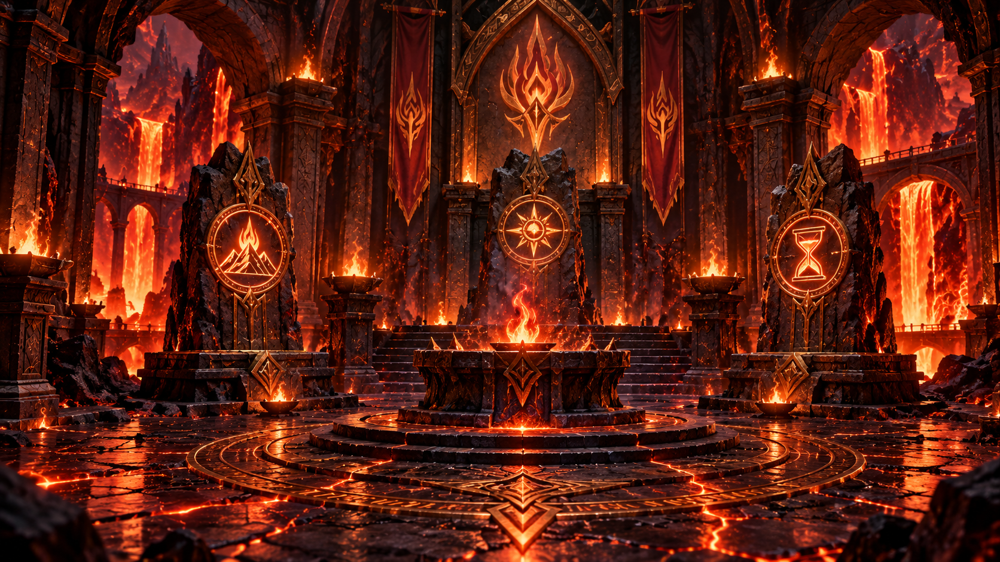

CHAPTER V – THE TRIAL OF FIRE
Keraon's Realm
The Eternal Flame


Beyond the burning mountains lies an ancient temple, where the Eternal Flame has guarded the memories of Ingnistil for three thousand years.
But the flame is fading, and the mountains have begun to tremble.
Keraon, Guardian of Fire
"The fire that once united these lands is dying. Without it, the balance of the elements will begin to unravel."
"Only one who possesses both courage and protection may enter the heart of the mountain."
The Burning Passage
You approach the entrance to the ancient mountain. Rivers of molten lava flow beneath the obsidian bridge.
The heat is unbearable. Every step forward feels as though the flames are reaching for you.
Keraon's voice echoes through the flames: "Courage alone will not protect you. The ancient magic of Armatura must shield your path."
The Chamber of the Eternal Flame

Deep within the mountain, you discover an ancient chamber carved from black obsidian.
At its center burns a small, flickering flame. Three ancient seals surround it, their magic fading.
"Ingnistil entrusted the Eternal Flame to these sacred seals. But their harmony has been broken."
An inscription glows upon the chamber wall:
"From the first spark, courage is born. Through courage, strength awakens. And through strength, the eternal flame endures."
Restore the Three Seals
The Blessing of Fire
The Eternal Flame rises once more, filling the ancient chamber with golden light.
Keraon steps forward, his fiery mane burning brighter than ever before.
"Ingnistil believed that courage was not the absence of fear, but the strength to face it."
"You have restored the flame that has guarded these lands for three thousand years."
"May its fire guide you through the darkness, and may your courage never fade."
You have earned the Blessing of Fire!

Liquid Fire
From the heart of the Eternal Flame, Keraon presents a vessel of living fire. Its magic will become part of the legendary Aetherlight Elixir.